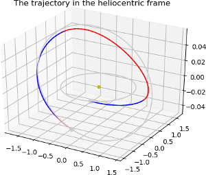

Mass optimal Mars Randezvous using a direct method¶


These plots are produced by the following code:
import pykep as pk
pk.examples.run_example8(nseg = 40)
if snopt7 is not available, slsqp will also produce, eventually, a feasible solution. Repeat several times in case unfeasible solutions are returned. Local minima may be found too. You can also take the solution found and refine it using a direct method using pykep. See the other examples.
This example demonstrates the use of the pykep.trajopt.direct_pl2pl which represents, in cartesian
coordinates, the transcribed optimal control problem using a sims-flanagan approach.
The code for this example can be studied here. Feel free to leave comments.